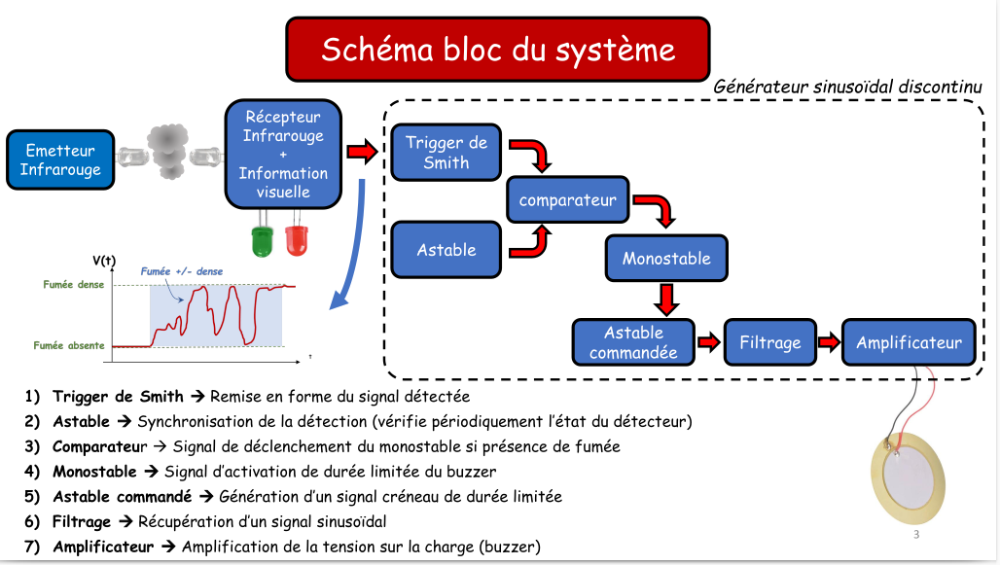
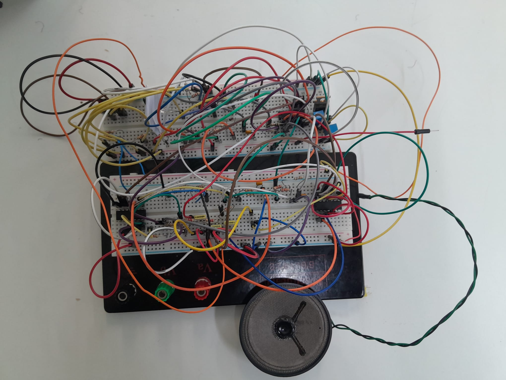

Conception, simulation et réalisation d'une chaîne d'instrumentation 100% analogique : de la barrière infrarouge à la génération d'une onde sonore pure.
Développé dans le cadre du module SE3 (Projet Électronique), ce système d'alarme repose sur une barrière optique infrarouge. Le défi d'ingénierie consistait à traiter un signal analogique fluctuant et bruité pour déclencher une sirène cadencée de manière totalement autonome et matérielle.
Chaque étage a été modélisé mathématiquement, simulé sous LTspice, puis validé à l'oscilloscope. Ce projet m'a permis de maîtriser la gestion des imperfections réelles des composants (tolérance des condensateurs, tension de déchet des AOP) face aux modèles théoriques.


Vidéo : Démonstration du circuit d'alarme sur breadboard. Activez le son pour entendre la tonalité à 800Hz et le rapport cyclique générés matériellement.